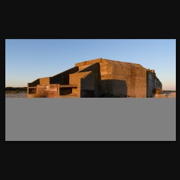
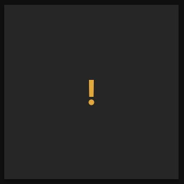
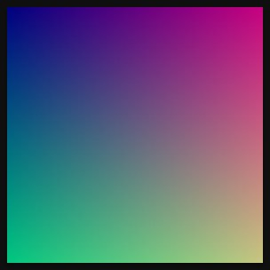
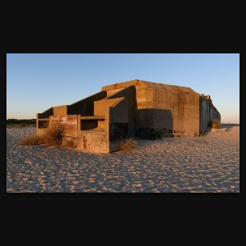

Never losing a photo
Dalíca writes into the folders where your only copy of a photo may live, so every write it makes is built to survive a crash, a full disk, another program touching the same file and a file designed to break it. This chapter shows the machinery behind that promise, step by step.
Where Dalíca writes, and through what
The list of places Dalíca writes is short and fixed:
- the folder sidecar
.dalica.jsonin each watched folder; - the hidden
.dalica-originals/folder, on Save; - the photo files themselves, only on Save and when writing metadata (captions, tags, places, dates);
- destinations you chose: an export folder, an import folder, a saved copy, a collage;
- its own library directory, cache, logs and temporary files;
- the operating system's trash.
Anything else would be a bug. Every one of those writes goes through a single crate, fs, at the bottom of the layer stack. A build check searches every other crate for the standard library's write, rename, remove, copy and create calls and fails if it finds one. That is what makes the rest of this chapter possible: the atomic-write routine, the "did someone else change this file?" check, the trash, and the fault points that tests use to simulate a crash at every step all live in one place, and nothing can step around them.
Atomic writes
The basic rule is simple: Dalíca never truncates a file and rewrites it in place. It writes the new bytes beside the old file, makes them durable, and swaps them in with one rename. The routine is fs::atomic::replace(path, bytes, expect), and it runs these steps:
- Hold the folder. The target's folder is validated and opened once, without following a link. On Linux and macOS every later step names files relative to that open handle, so a folder swapped for a symbolic link after the check cannot redirect the write. Windows has no such calls in stable Rust, so there Dalíca compares the folder's identity again before each step that creates, renames or removes a file.
- Check the target. The caller says what it expects:
Expect::Absent(a new file) orExpect::Unchanged(identity)(the version it read). If the target is anything else, the write is refused withChanged. A target that is a symbolic link is refused outright. - Create a temporary file in the same folder, named
.<name>.dalica-tmp-<16 hex digits>, with exclusive creation, so the final rename stays on one volume and never collides with anything. - Write,
fsync, copy permissions. The bytes are written and flushed to the disk, and the target's permission bits are copied onto the temporary file. - Check the target again. If another program replaced the file while Dalíca was writing, the temporary file is removed and the write is refused.
- Rename over the target, then
fsyncthe folder (on Unix), so the new name itself is durable. - Read back and compare. The file is reopened (again without following a link) and compared byte for byte with what was meant to be written.
fs, and what survives a crash at each step. Read down from a step: until the rename the photo's name holds the old file untouched; the rename itself is one operation, so the name never holds a mix; after it the name holds the new, verified file. The worst a crash can leave is one stray temporary file, which a later scan of the folder removes.A failure before step 5 leaves the target untouched, and the temporary file is removed on the way out. A failure or crash after the rename leaves the new bytes. A crash can therefore leave at most a stray temporary file and never a truncated target. Stray temporaries are removed when the folder is next scanned, but only regular files whose name has exactly the shape .<name>.dalica-tmp-<16 lowercase hex> and whose modification time is more than 24 hours old; a link, a folder or any near-miss name is never touched.
Proving it
The fs crate has named fault points at each step (atomic.open_dir, atomic.create_temp, atomic.write, atomic.fsync, atomic.rename, atomic.fsync_dir, atomic.verify). Its tests fail each one in turn, as an error that cleans up, as a crash that stops without cleaning up, and as a real "disk full" error from the operating system, and assert that the target holds the old or the new bytes and never a torn file. A separate test starts a child process and kills it (SIGKILL on Unix, TerminateProcess on Windows) at a random moment while it replaces a file or runs a Save's backup, then checks that the bytes are whole and that the original exists under exactly one name.
Never overwrite what was not just read
A replace goes ahead only if the file is still the version Dalíca read. That covers an editor saving the same photo, a sync client downloading a newer version, and a colleague swapping a file on a shared drive. The check compares a file's identity, which fs defines as:
- Linux and macOS
- device and inode from
stat, plus size and modification time. - Windows
- volume serial number, file index and creation time (read from a handle opened with no data access and every sharing mode, so the look never blocks another program), plus size and modification time.
Programs that save by writing a new file and renaming it over the old one (most editors, sync clients, metadata tools) always produce a new identity, and so does any change in size or modification time. The one thing the guard cannot see, on any system, is an edit made in place through the same file that keeps the size and sets the modification time back. It is a guard against ordinary rewrites, not a content hash. On volumes whose file numbers are not stable (FAT and exFAT may renumber a file, some network shares report 0), size, times and creation time still count, and a number that changes on its own makes Dalíca refuse the write and read again, never write over a file it did not read.
The same check runs before Save moves an original into .dalica-originals/, and before Undo Save or Revert moves it back.
Why a rename and not an in-place write: a rename gives the file a new inode, so the old version stays whole until the very last instant. One side effect is deliberate: if a photo has a hard link elsewhere, the other name keeps the old contents. Dalíca never changes a file through another name.
Merge, never replace
Dalíca shares your folders and your files with other programs, so it treats everything it did not write as someone else's property.
Sidecars
When Dalíca rewrites .dalica.json, it keeps every key it does not know, at the top level and inside each photo's entry. In this test, a key x-colorLabel was added to one photo and an object x-otherTool to the file by hand, then a caption was set with dalica-cli:
"DSC_4410.jpg": {
"caption": "Lanterns",
"changed": "2026-11-07T03:40:13.427Z",
"edits": ["autofix()"],
"tags": ["kyoto", "temples"],
"x-colorLabel": "purple"
}
},
"x-otherTool": { "lastSync": "2026-11-01" }Both foreign keys survived, sorted into place. A value of the wrong type is reported once and kept. A recipe operation Dalíca does not recognize (from a newer version, or a legacy operation it cannot map) is kept in its place in the list, and the operations after it are never dropped. When two folders are merged by a move, their sidecars are merged entry by entry; one sidecar never overwrites another. When a photo moves, its whole entry, unknown keys included, travels to the destination's sidecar, and the destination is written before the source, so an interruption leaves the entry in both files, never in neither.
Sidecar writes are debounced: at most one per folder per second, and only when the content changed. A crash loses at most the last second of changes in that folder's sidecar, never the file.
Metadata inside your photos
Captions, tags, places and dates are also written into the photo's own XMP, IPTC and EXIF so other applications see them. That write never re-encodes the image. For a JPEG, Dalíca rewrites only its own metadata segments (APP1 for EXIF and XMP, APP13 for IPTC) and copies every other segment byte for byte. Here is a real photo before and after Dalíca wrote a caption and two tags into it, with a short hash of each segment:
The metadata writer is careful in the same ways as the sidecar writer:
- It merges. Only the fields Dalíca owns are changed; every other field, from any other program, stays as it was. If a value was changed by another application since Dalíca last synced it (and is unchanged in Dalíca's sidecar), Dalíca imports the new value instead of overwriting it. Metadata in your files has the details.
- It refuses what it cannot read. A file whose EXIF, XMP, IPTC or image-resource (8BIM) block cannot be parsed is not rewritten at all, and neither is a RAW file built like a TIFF.
- It verifies before it writes. The new bytes are parsed back: the fields written must read back, and every byte outside the rewritten blocks must be unchanged. Only then does
fsreplace the file, expecting the identity it read. - It stays inside the format's limits. In a JPEG, EXIF must fit in 65,527 bytes and the XMP packet in 65,504 bytes of one APP1 segment; only padding is dropped to make it fit, otherwise the write fails and names the field. An IPTC caption is cut at 2,000 bytes and keywords at 64, on a character boundary.
Formats Dalíca cannot write metadata into (RAW, video, GIF, BMP, read-only files) keep everything in the sidecar only.
Save: the one pixel write
Save is the only operation that changes a photo's pixels, and it is built as a small journaled transaction. The journal is the folder's originals record, .dalica-originals/.dalica.json. Here is the one Dalíca wrote after an Auto Fix was saved in a test folder:
{
"dalica": { "version": 1 },
"originals": {
"IMG_4147.jpg": {
"digest": "md5:6d4ceb359f5328fc64b3184635b11566",
"height": 1800,
"mtime": 1794022444078,
"recipe": ["autofix()"],
"size": 796604,
"state": "done",
"time": 1794022444109,
"width": 2400
}
}
}The original (796,604 bytes) now sits in .dalica-originals/IMG_4147.jpg, and the photo's name holds the rendered result. The order of a first Save is:
- Refuse a recipe with an operation Dalíca cannot render; baking pixels never silently drops an edit.
- Read the photo whole with its identity; refuse it if its size or modification time is not what the library last saw.
- Render the recipe at full resolution with the metadata carried over. Nothing on disk has changed yet.
- Write the record's entry with
"state": "pending"(the recipe, the original's size, time, pixel size and digest). - Move the original into
.dalica-originals/with one rename that never replaces a file, after checking its identity once more. - Write the new file at the photo's now-free name, and verify it: the bytes, the pixel size, the orientation and the metadata fields.
- Mark the entry
"done".
At every moment, the original's bytes are at the photo's name or in the backup folder with an entry naming them. If Dalíca finds a pending entry when it opens a library or scans a folder, a Save was interrupted, and it repairs it by content, never by clocks: forward when the kept original is the recorded one and the new file decodes whole and matches the original rendered again with the recipe (within 3 levels on average), otherwise back, moving the original back to its name and putting the recipe back as unsaved edits. If neither is safe (the recorded original is nowhere to be found), it leaves everything as it is and says why. A later Save always renders again from the kept original, so quality loss never compounds, and the first original is always the one kept. Edits are recipes covers Save, Undo Save and Revert from the editing side.
Deletes go to the trash
Dalíca has no permanent-delete path for anything in your library, not in the window and not over automation. Deleting a photo, a video or a folder asks first and then hands it to the operating system's trash:
- Linux and the BSDs: the freedesktop.org trash. Dalíca first checks that a trash on the item's own volume can take it by a rename (the home trash when it is on that volume, else the volume's
.Trash/<uid>or.Trash-<uid>), so the trash library's fallback of copying into the home trash and deleting the source is never reached. - Windows: the Recycle Bin, through the shell, which is asked to warn instead of deleting permanently.
- macOS: the system's file manager API.
When the photo deleted in this guide's tests left its folder, it arrived in the trash with the standard record beside it:
[Trash Info]
Path=/…/photos/Cape%20May/DSC_4142.jpg
DeletionDate=2026-11-06T22:40:31Everything the library knew about the photo (its star, caption, recipe, albums) is kept in the delete's undo step. On Linux and Windows, Undo brings the file back to its old path (found by that path and, where possible, by its identity, and never replacing what is there now); macOS offers no way back from the trash, so there the Undo is disabled with its reason. If a volume has no trash at all (some network shares and removable drives), the delete fails for that file, explains that the drive has no trash and that Dalíca never deletes permanently, and points you to your file manager. Deleting a volume root or your home folder is refused.
"Remove from Dalíca", "Rebuild library" and pruning the thumbnail cache never touch photos, and caches only ever list and delete files of their own naming shape.
The one exception: after an import from a memory card, Dalíca can delete the copied files from the card, because cards usually have no trash. It does so only for files that import copied and verified byte for byte, only while both the card's file and its copy are still unchanged, only after you confirm, and never over automation. Import describes it.
Damaged files are kept aside
When Dalíca meets one of its own files that it cannot read, it never deletes it and never quietly writes over it. It renames it to <name>.corrupt-<UTC time> in the same folder (adding -001, -002 if that name is taken) and tells you. This applies to folder sidecars, the originals record, settings.json, albums.json, people.json, the file-operation journal and the index snapshot.
A damaged folder sidecar gets extra care, because it may hold your only record of that folder's stars and edits. In this test the Cape May folder's sidecar was cut off in the middle of a value; the next change to a photo there gave:
$ dalica-cli run --library lib --cmd photo.star.toggle --params '{"ids":[1]}'
{"command":"photo.star.toggle","ok":true,"result":{"ids":[1],"on":true}}
{"code":"unsaved","error":"folder 1: damaged sidecar kept as …/photos/Cape May/.dalica.json.corrupt-20261107T034020Z; the folder is read-only","ok":false}The star was applied in the library (and its journal), but nothing was written into the folder: no new sidecar, no entry carried in or out by a move, and no metadata written into its photos, until you choose. The folder shows a caution banner, and the list of damaged folders is kept in damaged-folders.json in the library directory so a restart cannot quietly start writing there. Reset Folder Data (the command folder.resetData) asks first, then either reads a sidecar you restored by hand or writes a new one from what the library knows, including changes made while the folder was damaged:
$ dalica-cli run --library lib --cmd folder.resetData --params '{"folder":1,"confirm":true}'
{"command":"folder.resetData","ok":true,"result":{"folder":1,"kept":["…/.dalica.json.corrupt-20261107T034020Z"],"restored":false,"written":true}}The kept copy is never read, renamed, overwritten or deleted afterwards. For the library's own files the rule is gentler: a damaged settings.json is kept aside and the defaults are used; a damaged index snapshot is kept aside and the journal is replayed, or the index is rebuilt from the folders.
Hostile files
Dalíca scans tens of thousands of files unattended, and some of them will be broken, cut short by a failed copy, or (rarely) crafted to crash a parser. One bad file must never stall or kill a scan. The defenses come in layers.
No panics, by construction
Every crate root carries #![forbid(unsafe_code)] and denies unwrap, expect, panic!, unreachable!, todo! and unimplemented!; the linter (clippy) enforces it and allows them in tests only. Every number that comes from a file is treated as hostile: offsets are read with get() instead of indexing, lengths and counts use checked arithmetic, strings are sliced only at character boundaries, floats are checked for NaN and infinity, and allocations sized by input are checked against a cap first. As a last resort, a panic hook and catch_unwind wrap every command and every per-file unit of scan, import and export work, so an escaped panic becomes an error message and the app keeps going. Third-party decoders run inside catch_unwind too.
Limits before allocation
Each parser checks what a file declares before it reserves memory or follows a pointer. A selection of the limits:
| Input | Limits |
|---|---|
| Any raster image | each side at most 65,535 px, at most 230 pixels, every pixel buffer reserved from one budget per decode (1.5 GiB by default) |
| JPEG | at most 4,096 segments looked at; ICC profile chunks reassembled and checked, at most 16 MiB and 1,000 tags |
| EXIF and TIFF directories | at most 1,024 directories, nesting depth 10, 8,192 entries each, strings 64 KiB; every visited offset remembered, so a chain that loops is detected |
| XMP | packet at most 16 MiB after reassembly, XML depth 64, 200,000 nodes; DOCTYPE, entity declarations and external references refused |
| IPTC | dataset at most 64 KiB, at most 10,000 datasets |
| HEIF, AVIF, MP4 boxes | nesting 12, at most 4,096 boxes per level; a box that runs past its parent is malformed |
| Embedded thumbnails, RAW previews | inside the file, at most 64 MiB, decoded under the raster limits |
.dalica.json | file at most 64 MiB, nesting 16, a string 1 MiB, 1,000,000 photo entries, 10,000 operations per recipe |
| Folder walks | depth 32, 1,000,000 entries, symbolic-link loops detected by device and inode |
The scan reads each file's header and metadata on a worker thread inside the panic guard, with a cancel flag. A file that fails, panics or takes more than 10 seconds of work is recorded by its path, size and modification time and not retried until it changes; its tile shows a placeholder and the scan moves on. Files are recognized by their first bytes, never by their name. The parsers of untrusted input (image headers and decoders, EXIF, XMP, IPTC, the sidecars, the index journal) also have fuzz targets that run at each milestone review, and every command and control method is fed hostile parameters by an engine test called panic_hunt.
What a malformed JPEG looks like
To see these rules at work, five broken files were made from one good photo and put in a folder with it: the file cut to a third of its length, a frame header edited to claim 65,535 × 65,535 pixels, a PNG renamed to .jpg, an EXIF block whose directory points at itself, and 50,000 random bytes named not-a-photo.jpg. The whole folder scanned in a few hundredths of a second, with no warning from the scan and no crash. This is what the light table showed, rendered by dalica-cli snapshot:

Cut to a third
Claims 65,535 × 65,535
A PNG named .jpg
EXIF that loopsOther refusals show up the same way, on the tile and in its tooltip: "Damaged file" for data that is cut, inconsistent or loops, "This kind of JPEG isn't supported" for the variants the decoder does not handle (arithmetic coding, 12-bit samples, lossless and hierarchical frames), and "Not a picture Dalica can read" for anything else. An unusable embedded color profile is not damage: it is ignored, logged, and the pixels are shown as sRGB.
Why tolerate a cut file: a photo whose copy stopped early is still your photo. Showing what arrived lets you find it and copy it again; refusing it would hide it.
Network shares, synced folders and removable media
Folders do not always sit on a local disk that stays put. Dalíca's answers for the less reliable places:
- Change events are hints, the verification scan is the truth. On Linux, Dalíca recognizes network file systems by their type in the mount table (
nfs,nfs4,cifs,smb3,smbfs,afs,ceph,glusterfs,9p,fuse.sshfs,fuse.rclone) and polls folders there with a pure-Rust poller instead of trusting their change events. Every watched folder is also rescanned in full 6 hours after it was last walked, and 60 seconds after the app starts if nothing walked it since, which catches anything the events missed. Scanning and watching covers this. - Never remove what was not seen. Only what a scan walked to the end may leave the library. A root that cannot be walked keeps everything, and so does a root that is suddenly empty (the empty mount point an unplugged drive leaves behind). A root whose device changed and where none of the library's files is found counts as offline too.
- Nothing is written under an offline root. The online checks run every 10 seconds, and each sidecar write and each metadata write checks its root again right before it lands. A write whose root fails is held, reported as unsaved, and written when the volume returns; the list of folders waiting is kept in
pending-writes.json. So a sidecar never lands in an empty mount point. - Slow shares never freeze the window. Answers the window needs while drawing come from caches that workers fill; a hung share only delays a worker.
- The lock stays local. The library lock lives in the local library directory, never on a share, because file locks on network shares are unreliable.
- Removable media can be frozen. A folder set to Scan Once is indexed once and then left alone, which suits cards and slow drives. When importing, a card or drive is read as an untrusted tree: the walk's depth and loop bounds apply, at most 100,000 files are listed, files are read in 64 KiB chunks with at most 256 MiB kept for a header and thumbnail and 16 GiB read in all, and the sizes the device reports are never trusted for allocation.
Because every write is a rename of a fully written temporary file, a volume that disappears in the middle of a write leaves the old file, and the change stays queued in the library.
Legacy files are read-only
Folders that the classic folder-based organizer managed may still hold its per-folder settings file and its own hidden originals folder. Dalíca reads them during scans so you keep your stars, captions, edits, albums and people, but it never modifies, renames or deletes them, so you can keep running the old program against the same folders.
- The first time you change something in such a folder, Dalíca creates its own
.dalica.jsonholding everything it read from the old file for that folder, not just the photo you changed. It prints the new file, parses it back, checks it says the same, and creates it under its exact name with a step that never replaces an existing file. - Once a folder has
.dalica.json, that file wins and later changes the old program makes to its own file are not picked up. - Old edit operations without an equivalent are kept in the recipe as opaque
legacy:entries, in their place, rather than dropped. - The old hidden originals folder is offered for Revert and Undo Save; Dalíca copies the original back from it and never writes into it or removes anything from it.
The legacy reader has its own limits (file at most 64 MiB, a line at most 1 MiB, at most 1,000,000 sections) and a fuzz target. Reading these files can be turned off in Options.
One process per library
Two programs writing the same sidecars and the same index at once could undo each other's work, so a library is open in exactly one Dalíca process. The lock is an operating-system file lock on <library>/lock: it is released however the process ends, even if it is killed, and the file itself is never deleted (that would race with the next process). A second process asks once and gives up immediately rather than waiting. With the headless app holding a test library, the command-line tool answered:
$ dalica-cli run --library lib --cmd library.query --params '{}'
dalica-cli: the library at …/lib is open in another Dalica process
# exit status 3
$ dalica-cli mcp --library lib
dalica-cli mcp: the library at …/lib is open in another Dalica process; use connect mode (--connect) to drive the app that has itThe desktop app in the same situation starts with an empty temporary session that writes nothing and asks whether to retry, choose another library, continue or quit. The thumbnail cache folder has its own lock, so two processes never write one cache either. And for everyday use, a second launch of Dalíca on your own library does not open it twice: it hands the files it was asked to open to the Dalíca that is already running and exits.
In the code
- crates/fs/src/atomic.rs (atomic replace, temporary names), identity.rs (file identity per system), dirfd.rs (writes relative to a held folder), aside.rs (
.corrupt-<time>), stale.rs (stale temporaries), trash.rs, transfer.rs, originals.rs, lock.rs, faults.rs, tests/crash.rs - crates/store/src/writer.rs (debounced sidecar writer, damaged sidecars), crates/store/src/carry.rs (entries travel with their files), crates/store/src/metawrite.rs (metadata write-back), crates/store/src/legacy.rs
- crates/create/src/save (Save in place and its repair), crates/engine/src/cmd/folder_data.rs (Reset Folder Data), crates/engine/src/cmd/delete.rs
- crates/image/src/limits.rs, crates/image/src/formats/jpeg.rs, crates/image/src/lib.rs (tile reasons), crates/scan/src/volumes.rs and watch.rs (network shares)
- docs/data-model.md §1, §6, §8, §9; docs/standards/never-crash.md; docs/security.md §4 and §5